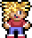
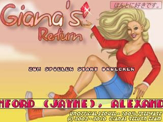
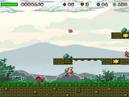

Giana's Return
Dieser Artikel wurde für die folgenden Ubuntu-Versionen getestet:
Ubuntu 14.04 Trusty Tahr
Zum Verständnis dieses Artikels sind folgende Seiten hilfreich:

Giana's Return  ist der inoffizielle Nachfolger des Jump'n'Run-Klassikers
The Great Giana Sisters aus dem Jahre 1987 und genießt die Duldung der Spellbound Entertainment AG
ist der inoffizielle Nachfolger des Jump'n'Run-Klassikers
The Great Giana Sisters aus dem Jahre 1987 und genießt die Duldung der Spellbound Entertainment AG  . Es kann mit der Tastatur oder einem Controller verwendet werden.
. Es kann mit der Tastatur oder einem Controller verwendet werden.
Es existiert eine offizielle Fortsetzung des Kultspiels. Diese ist jedoch nicht für den PC verfügbar.
|  |  |
| Menü | Spielszene |
Installation¶
Vorbereitung¶
Im Vorfeld sind die Pakete
freeglut3
libsdl-mixer1.2 (universe)
 mit apturl
mit apturl
Paketliste zum Kopieren:
sudo apt-get install freeglut3 libsdl-mixer1.2
sudo aptitude install freeglut3 libsdl-mixer1.2
zu installieren [1].
Giana's Return¶
Zur Installation des Spiels von der Projektseite  das Paket für Ubuntu herunterladen und ins Homeverzeichnis, z.B. nach ~/Spiele/gianasreturn, entpacken [2]. Anschließend die Ausführrechte für die Startdatei giana_ubuntu32 (32-Bit) bzw. giana_ubuntu64 (64-Bit) setzen [3] und das Spiel durch den Aufruf dieser starten [4].
das Paket für Ubuntu herunterladen und ins Homeverzeichnis, z.B. nach ~/Spiele/gianasreturn, entpacken [2]. Anschließend die Ausführrechte für die Startdatei giana_ubuntu32 (32-Bit) bzw. giana_ubuntu64 (64-Bit) setzen [3] und das Spiel durch den Aufruf dieser starten [4].
Auf Wunsch kann ein Menüeintrag [5] vorgenommen werden. Das passende Icon findet man im Installationsverzeichnis.
Konfiguration¶
Im Spiel können unter "Optionen" einige Einstellungen zur Konfiguration der Tastatur oder eines Controllers vorgenommen werden. Auch ist es hier möglich die Lautstärke der Musik und der Geräusche zu ändern. Für weitere Einstellungen ist es nötig dem Spiel beim Programmstart [4] weitere Parameter zu übergeben:
| Startparameter | |
| Parameter | Beschreibung |
-w | Fenstermodus |
-fs | Vollbild - hier wird automatisch -x2 verwendet. |
-x2 | Vergrößerung ohne Kantenglättung |
-aa | Vergrößerung mit Kantenglättung |
-b16 | Farbtiefe von 16 Bit wird verwendet. |
-b24 | Farbtiefe von 24 Bit wird verwendet. |
-a44 | Audiowiedergabe mit 44Khz. Weitere mögliche Werte sind hier -a11 (11KHz) und -a22 (22Khz) |
-ogl | Experimentelles OpenGL mit einer Auflösung von 640x480 mit VSYNC. |
-ogl -hd | OpenGL für 1360x768 und 16:9 Bildschirme. |
giana.cfg¶
Einige zusätzliche Einstellungen können mit einem Editor [6] in der Datei giana.cfg vorgenommen werden, welche nach dem ersten Start des Spiels im Installationsverzeichnis angelegt wird.
Um das Spiel direkt in deutscher Sprache zu starten (und die Sprachauswahl zu umgehen) ändert man in der Zeile fast=0 den Wert auf 2. Zusätzliche Möglichkeiten sind der Datei config.txt zu entnehmen. Diese enthält unter anderem die Beispielbelegung eines Xbox-360-Controllers.
Eine angepaßte Konfigurationsdatei kann so aussehen:
vol_music=100 vol_sound=15 fast=2 j_jump=0 j_fire=1 j_start=7 j_up=1 j_down=4 j_left=8 j_right=2 vscroll=0 k_jump=z k_fire=x k_start=13 k_up=273 k_down=274 k_left=276 k_right=275 mpFlagsOVERSAMPLING=1 mpResamplingMode=1 mpFlagsNOISE_REDUCTION=1 mpFlagsREVERB=0 mpReverbDepth=0 mpReverbDelay=40 mpFlagsMEGABASS=0 mpBassAmount=0 mpBassRange=10 mpFlagsSURROUND=0 mpSurroundDepth=0 mpSurroundDelay=5
Tastenkürzel¶
| Tastenkürzel | |
| Taste(n) | Beschreibung |
| ↑ + ↓ + ← + → | Giana steuern. |
| X | Schießen |
| ⏎ | Start / Pause |

Infobox¶
| Giana's Return | |
| Genre: | Jump&Run |
| Sprache: |   |
| Veröffentlichung: | 2006 |
| Entwickler: | Gianas-Return Team |
| Systemvoraussetzungen: | - |
| Strichcode / EAN / GTIN: | - |
| Medien: | Download |
| Läuft mit: | nativ |
- Erstellt mit Inyoka
-
 2004 – 2017 ubuntuusers.de • Einige Rechte vorbehalten
2004 – 2017 ubuntuusers.de • Einige Rechte vorbehalten
Lizenz • Kontakt • Datenschutz • Impressum • Serverstatus -
Serverhousing gespendet von